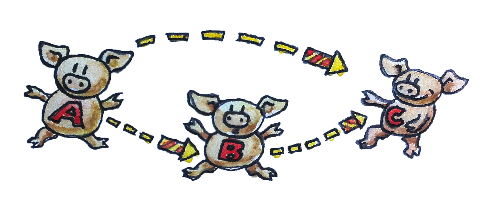

2 Category: แก่นแท้ของการประกอบเข้าด้วยกัน (Draft)
แนวคิดของcategoryนั้นเรียบง่ายมากๆ categoryนั้นประกอบด้วยวัตถุและลูกศรต่างๆที่อยู่ระหว่างวัตถุนั้นๆ นี่คือเหตุผลที่ว่าทำไมcategoryถึงสามารถแสดงออกมาให้เป็นภาพได้อย่างง่ายดาย วัตถุสามารถถูกวาดในรูปแบบของวงกลมหรือจุดและลูกศรก็ถูกวาดด้วยลูกศร (เพื่อไม่ให้ดูหน้าเบื่อจนเกินไป ในบางครั้งผมจะวาดวัตถุเป็นรูปหมูและลูกศรที่เป็นดอกไม้ไฟ) แต่แก่นแท้ของcategoryคือการประกอบเข้าด้วยกัน หรือคุณก็อาจจะพูดได้ว่าแก่นแท้ของการประกอบเข้าด้วยกันคือcategory ลูกศรนั้นประกอบกันและดังนั้นถ้าคุณมีลูกศรจากวัตถุ\(A\)ไปยังวัตถุ\(B\)และลูกศรอีกลูกจากวัตถุ\(B\)ไปยังวัตถุ\(C\) มันก็จะต้องมีลูกศร(ซึ่งเป็นการประกอบกันของลูกศรทั้งสอง)จาก\(A\)ไปยัง\(C\)
2.1 ลูกศรในฐานะfunction
แบบนี่มันไม่ไช่สิ่งที่นามธรรมไร้สาระ(abstract nonsense)แล้วหรอ? ไม่ต้องกังวลไป เรามาเริ่มจากสิ่งที่เป็นรูปธรรมก่อน โดยการคิดว่าลูกศร(หรือที่เรียกว่าmorphisms)ให้เป็นfunction ถ้าคุณมีfunction \(f\) ที่นำargumentของtype \(A\)และคืนค่า(return)ที่เป็นtype \(B\)กลับมา ในทางกเดียวกันคุณก็จะมีfunctionอีกตัวหนึ่งอย่าง\(g\)ที่นำของของtype \(B\)และคืนค่าที่เป็นtype \(C\)กลับมา คุณสามารถที่จะประกอบทั้งสองfunctionนี้โดยการนำผลลัพธ์ของ\(f\)ไปใส่ใน\(g\) แล้วคุณก็จะได้นิยามfunctionอีกแบบที่นำค่าในtype \(A\)และคืนค่าที่เป็นtype \(C\)กลับมา

ในทางคณิตศาสตร์ การประกอบเข้าด้วยกันแบบนี้จะถูกเขียนโดยวงกลมขนาดเล็กระหว่างfunctionตัวอย่างเช่น \(g\circ f\) จะเห็นได้ว่าลำดับของการประกอบกันมี ทิศทางจากขวาไปช้าย สำหรับบางคนแล้วการทำแบบนี้ค่อนข้างที่จะสับสน คุณอาจจะมีความคุ้นชินกับเครื่องหมายpipeในunixอย่างเช่น
lsof | grep Chromeหรือเครื่องหมายchevron >> ใน F# โดยที่ทั้งสองจะเริ่มจากช้ายไปขวา แต่ในคณิตศาสตร์และfunctionต่างๆของHaskellจะถูกประกอบกันจากขวาไปช้าย มันช่วยได้อยู่ถ้าคุณอ่าน \(g\circ f\) ว่า “\(g\) มาหลัง \(f\)”
เรามาทำให้สิ่งนี้ชัดเจนมากขึ้นโดยการเขียนโค้ดภาษา C เรามีfunction \(f\)อยู่โดยที่มันนำargumentที่มีtype \(A\)และคืนค่าที่เป็นtype\(B\)
B f(A a);และfunctionอีกอันหนึ่ง:
C g(B b);การประกอบกันก็จะเป็น:
C g_after_f(A a){
return g(f(a));
}ในตอนนี้คุณจะเห็นการประกอบกันจากขวาไปช้าย: g(f(a)); ในภาษา C
ผมหวังว่าผมสามารถที่จะบอกคุณว่ามันมีtemplateในlibraryมาตรฐาน (standard library)ของC++ที่นำfunctionสองfunction และคืนfunctionที่มาจากการประกอบกันของสองfunctionก่อนหน้า แต่ในตอนนี้มันไม่มีอยู่ ดังนั้นเรามาลองHaskellกันดู นี่คือการประกาศfunctionจาก\(A\)ไปยัง\(B\)
f :: A->Bและก็เหมือนกัน
g :: B->Cการประกอบเข้าด้วยกันของสองfunctionก็คือ
g . fหลังจากการที่คุณเห็นสิ่งที่ทำได้ง่ายๆในHaskell ความไม่สามารถในการเขียนในแบบfunctionalที่ตรงไปตรงมาในC++นั้นก็จะน่าอายหน่อย ในความเป็นจริงแล้วแล้วHaskell จะอนุญาติในคุณใช้ตัวอักษรUnicodeดังนั้นคุณสามารถที่จะเขียนประกอบกันโดยในแบบที่ว่า
g ◦ fคุณก็สามารถที่จะใช้ตัวอักษรUnicodeอย่างdouble colons (::)หรือลูกศรได้:
f ∷ A → Bดังนั้นนี่คือบทเรียนแรกของHaskellที่ว่า double colons หมายความว่า “มีtype ของ…” typeแบบfunctionที่ถูกสร้างโดนการนำลูกศรเข้ามาในระหว่างสองtype คุณประกอบทั้งสองfunctionโดนการใส่จุด(.)เข้ามาในระหว่างพวกมัน (หรือวงกลมในUnicode)
2.2 คุณสมบัติต่างๆของการประกอบกัน
โดยทุกๆการประกอบกันโดยจำเป็นต้องมีสองคุณสมบัติที่สำคัญอย่าง:
- ประกอบกันนั้นต้องมีคุณสมบัติการเปลี่ยนหมู่ (associativity) ถ้าคุณมีmorphismอยู่สามอัน \(f,g\) และ \(h\) ที่สามารถประกอบกันได้ (นั้นก็คือวัตถุต่างๆต้องเหมือนกันในตอนเริ่มและจบระหว่างกัน) ในการประกอบกันของพวกมันคุณจะไม่จำเป็นต้องมีวงเล็บ ในการเขียนทางคณิตศาสตร์ คุณสมบัตินี้สามารถแสดงได้อย่างนี่: \[h\circ(g\circ f)=(h\circ g)\circ f=h\circ g\circ f\]หรือในHaskell(เสมือน):
f :: A -> B
g :: B -> C
h :: C -> D
h . (g . f) == (h . g) . f == h . g . f(ผมเขียนว่าเป็นภาษาเสมือนก็เพราะว่าความเท่ากันไม่ได้ถูกกำหนดสำหรับfunction) สมบัติการเปลี่ยนหมู่นั้นค่อนข้างชัดเจนในตอนที่เราทำงานกับfunctionแต่มันอาจจะไม่ชัดเจนในcategoryอื่นๆ
- สำหรับทุกๆวัตถุ \(A\) ได้มีลูกศรที่เป็นสมาชิกunitของการประกอบกันอยู่ ลูกศรนี้จะวนกลับจากวัตถุมายังตัวมันเอง ในการที่เป็นสมาชิกunitของการประกอบกันหมายความว่าในการประกอบมันกับลูกศรที่อาจจะเริ่มด้วย \(A\) หรือจบที่ \(A\) ผลลัพธ์คือตัวลูกศรเองเหมือนเดิม ลูกศรที่เป็นสมาชิกunitสำหรับวัตถุ \(A\) จะถูกเรียกว่า \(\operatorname{id}_A\) ในการเขียนทางคณิตศาสตร์ ถ้า \(f\) มาจาก \(A\) ไปยัง \(B\) แล้วนั้น \[f\circ\operatorname{id}_A=f\]และ\[\operatorname{id}_A\circ f=f\]
ในการทำงานกับfunction ลูกศรunitจะถูกเขียนในฐานะ function identityที่จะคืนค่าargumentกลับมา ในการเขียนแบบนี้ก็เหมือนกันสำหรับทุกtype นั้นหมายความว่าfunctionนี้เป็นpolymorphicที่เป็นสากล ใน C++เราสามารถที่จะกำหนดมันในฐานะtemplateว่า
template<class T> T id(T x) { return x; }แน่นอนว่า ใน C++ ไม่มีอะไรที่ตรงไปตรงมาก็เพราะว่าคุณต้องคำนึงถึงวิธีการนำตัวแปลเข้ามาด้วยไม่ใช่แค่สิ่งที่คุณนำเข้ามา (นั่นก็คือโดยส่งค่าโดยตรง โดยreference โดยconst reference โดยmove และอื่นๆ)
ในHaskell function identityเป็ยส่วนหนึ่งของlibraryมาตรฐาน (ที่เรียกว่า Prelude) และนี่คือการประกาศและนิยามของมัน
id :: a -> a
id x = xคุณก็จะเห็นว่า function polymorphic (หลายค่า) ของ Haskell เป็นสิ่งที่เขียนได้ง่ายมาก ในการประกาศ คุณแค่แทนที่typeด้วยตัวแปรของtype ชื่อของtype จริงๆจะเริ่มโดยตัวพิมพ์ใหญ่และตัวแปรของtype จะเริ่มโดยตัวพิมพ์เล็ก(นี่คือเคล็ดลับเล็กน้อย) ในตัวอย่างนี้ a จะแทนค่าtypeทุกtype
นิยามfunctionของHaskellนั้นประกอบด้วยชื่อตามด้วยparameter(ในที่นี้คือแค่ x) และตัว(body)ของfunctionนั้นตามหลังมาจากเครื่องหมายเท่ากับ ความรวดรัดแบบนี้อาจจะดูแปลกใหม่สำหรับคนที่เริ่มใช้มัน แต่หลังจากนี้คุณจะเข้าใจว่าทำไมมันถึงมีรูปร่างแบบนี้ คำนิยามของfunctionและการเรียกใช้functionนั้นเป็นส่วนหลักของการเขียนโปรแกรมแบบfunctional นั่นก็หมายความว่าไวยกรณ์ของทั้งสองก็จะถูกย่อให้อยู่ในขนาดที่เล็กที่สุด ไม่แค่ว่าไม่มีวงเล็บรอบๆargumentแต่ก็ไม่มีลูกน้ำอยู่ระหว่างพวกมันด้วย (คุณจะเห็นหลังจากนี้ในตอนที่เรากำหนดfunctionที่มีargumentหลายตัว)
ในตัวของfunctionนั้นเป็นสูตร(expression)ในทุกๆครั้ง(จะไม่มีstatementในfunction) และผลลัพธ์ของfunctionก็จะเป็นตามสูตรนี่ (ในตัวอย่างคือแค่ x)
นี่ก็จุดสุดท้ายของบทเรียนHaskellที่สอง
เงื่อนไขของfunction identityสามารถถูกเขียน (ในภาษาเสมือน Haskell) ได้ว่า
f . id == f
id . f == fคุณอาจจะถามตัวเองว่า ทำไมเราต้องมี(หรือสนใจ)function identity ที่เป็นfunctionที่ทำอะไรไม่ได้เลย? ในแบบเดียวกันที่ว่าทำไมเราต้องมี(หรือสนใจ)ตัวเลขศูนย์ด้วย? เลขศูนย์คือเครื่องหมายของความว่าเปล่า ในโรมโบราณก็มีระบบตัวเลขที่ไม่มีเลขศูนย์และพวกเขาก็สามารถสร้างถนนที่ยอกเยี่ยมและท่อระบายนำ้ที่ก็บางส่วนยังอยู่จนถึงวันนี้
ค่าที่เป็นธรรมชาติอย่างเลขศูนย์หรือ \(\operatorname{id}\) นั้นมีประโยชน์มากในตอนที่เราทำงานกับตัวแปลต่างๆที่เป็นสัญลักษณ์ นี่คือเหตุผลที่ชาวโรมันจึงไม่ค่อยเชี่ยวชาญด้านพีชคณิตในขณะที่ชาวอาหรับและชาวเปอร์เซียที่มีความเคยชินกับแนวคิดของเลขศูนย์ก็กลับมี ความเชี่ยวชาญทางด้านพีชคณิตดังนั้นfunction identityจึงมีประโยชน์ในฐานะargumentหรือเป็นสิ่งที่คืนกลับมาของfunctionลำดับสูง(higher-order function) functionลำดับสูงทำให้การโยกย้ายเครื่องหมาย (symbolic manipulation)ของfunctionต่างๆนั้นเป็นไปได้ พวกมันคือพีชคณิตของfunctionต่างๆ
โดยสรุปแล้ว categoryประกอบด้วยวัตถุและลูกศร(morphism) ลูกศรสามารถที่จะประกอบกันได้และการประกอบกันนั้นสามารถเปลี่ยนหมู่ได้ ในวัตถุทั้งหมดก็จะมีfunction identityที่เป็นเหมือนunitภายใต้การประกอบกัน
2.3 การประกอบกันเป็นแก่นแท้ของการเขียนโปรแกรม
โปรแกรมเมอร์แบบfunctionalมีวิธีการที่เจาะจงในการเข้าหาปัญหา พวกเขาถามคำถามที่ค่อนข้างเหมือนZen ยกตัวอย่างเช่น ในกรณีที่มีการเขียนโปรแกรมที่interactกับผู้ใช้พวกเขาก็จะถามว่า อะไรคือการinteraction ในการเขียนGame of LifeของConwayพวกเขาคงที่จะคิดเกี่ยวกับความหมายของชีวิต ในแบบเดียวกันผมก็จะถามว่า อะไรคือการเขียนโปรแกรมในระดับที่เบื้องต้นที่สุด การเขียนโปรแกรมนั้นเกี่ยวกับการบอกให้คอมพิวเตอร์ให้ทำอะไรบางอย่าง “นำข้อมูลในหน่วยความจำที่ x และนำมาบวกกับสิ่งที่อยู่ในregister EAX” แต่แม้กระทั่งในตอนที่เราเขียนโปรแกรมในภาษาassembly คำสั่งที่เราให้กับคอมพิวเตอร์นั้นเป็นการแสดงออกที่มีความหมายมากกว่านี้ เรากำลังที่จะแก้ปัญหาที่ไม่ตรงไปตรงมา (ถ้าไม่อย่างนั้นแล้ว เราคงจะไม่ต้องการความช่วยเหลือจากคอมพิวเตอร์หรอก) แล้วเราจะแก้ปัญหาอย่างไรดี ? เราก็ต้องย่อยปัญหาที่ใหญ่ให้เป็นปัญหาชิ้นเล็กชิ้นน้อย แล้วถ้าปัญหาที่ถูกย่อยแล้วยังที่จะเป็นปัญหาที่ใหญ่อยู่ดี เราก็จะทำการย่อยต่อไป สุดท้ายแล้ว เราเขียนโค้ดที่แก้ปัญหาขนาดเล็กต่างๆทั้งหมด แล้วก็นำโค้ดเหล่านี้มาประกอบกันเพื่อที่จะสร้างคำตอบให้กับปัญหาที่มีขนาดใหญ่ นี่คือแก่นแท้ของการเขียนโปรแกรม การย่อยปัญหาจะไม่ใช่ทางที่ดีเลยถ้าเราไม่สามารถที่จะนำชิ้นส่วน(คำตอบ)ต่างๆมารวมกันได้
วิธีการของการย่อยที่เป็นลำดับชั้นและการประกอบเข้าใหม่นั้นเราไม่ได้ถูกกำหนดโดยคอมพิวเตอร์ มันสะท้อนความจำกัดของความคิดของมนุษย์ สมองของเราสามารถทำงานกับแนวคิดเพียงไม่กี่ตัวในเวลาเดียวกัน หนึ่งในบทความวิจัยที่ถูกอ้างถึงมากที่สุดในจิตวิทยาอย่าง The Magical Number Seven, Plus or Minus Two1 หรือเลขมหัศจรรย์เจ็ดบวกลบด้วยสอง คาดคะเนว่าเราสามารถที่จะเก็บ “ชิ้นส่วน”ของข้อมูลในความคิดที่มีจำนวน \(7\pm2\) รายละเอียดของความเข้าใจของเราต่อความจำระยะสั้นของมนุษย์อาจจะเปลี่ยนไปแต่เราแน่ใจได้ว่ามันนั้นจำกัด สุดท้ายแล้วเราไม่สามารถที่จะทำงานกับมหาสมุทรของวัตถุ(จำนวนมาก)หรือสปาเก็ตตี้ของโค้ด เราต้องการโครงสร้างไม่ใช่เพราะว่าโปรแกรมถูกวางโครงสร้างไว้อย่างดีจะดูน่ามอง แต่เพราะว่าไม่อย่างนั้นแล้วสมองของเราจะไม่สามารถประมวลพวกมันได้อย่างมีประสิทธิภาพ เรามักจะอธิบายบางส่วนของโค้ดว่าสง่างามหรือสวยงามแต่สิ่งที่เราหมายถึงจริงๆคือการที่มันสามารถที่จะถูกประมวลโดยความคิดของมนุษย์ที่จำกัด โค้ดที่สง่างามได้สร้างชิ้นส่วนต่างๆในขนาดและในจำนวนที่เหมาะสมสำหรับระบบย่อยทางความคิดของเราเพื่อที่จะดูดซึมพวกมัน
แล้วอะไรคือจำนวนชิ้นส่วนการประกอบกันของโปรแกรมที่เหมาะสม? พื้นที่ผิวของชิ้นส่วนต่างๆเหล่านี้ควรที่จะเพิ่มขึ้นในอัตราที่ช้ากว่าปริมาณของมัน (ผมชอบการเทียบแบบนี้เพราะว่าโดยการที่รู้ว่าพื้นที่ผิวของวัตถุทางเรขาคณิตขยายเป็นกำลังสองของขนาดของมัน แต่ช้ากว่าปริมาณ ที่ขยายเป็นกำลังสามของขนาดของมัน) พื้นที่ผิวก็คือข้อมูลที่เราต้องใช้ในการประกอบชิ้นส่วนต่างๆ ปริมาณก็คือข้องมูลที่เราต้องการเพื่อที่จะเขียนพวกมันออกมา ไอเดียคือว่าหลังจากการชิ้นส่วนเหล่านี้ถูกเขียนขึ้นแล้ว เราสามารถที่จะลืมรายละเอียดของการสร้างและจดจ่อกับการที่ชิ้นส่วนนี้มีปฏิสัมพันธ์กับชิ้นส่วนอื่นๆ ในการเขียนโปรแกรมแบบobject-orientedพื้นที่ผิวก็คือการประกาศclassของobjectหรือabstract interface ในการเขียนแบบfunctionalมันคือการประกาศfunction (ผมก็ทำให้ง่ายจนเกินไปแต่นี่ก็คือสาระสำคัญของมัน)
ทฤษฎีcategoryนั้นสุดโต่งในความหมายที่ว่ามันป้องกันเราอย่างแข็งขันจากการมองเข้าไปในวัตถุต่างๆ วัตถุในทฤษฎีcategoryคือสิ่งที่คลุมเครือและเป็นนามธรรม สิ่งที่คุณรู้ทั้งหมดและจะรู้เกี่ยวกับมันคือวิธีการที่มันเกี่ยวข้องกับวัตถุอื่นๆ วิธีการที่มันเชื่อมต่อกับวัตถุต่างๆนั้นโดยลูกศร นี่คือการที่search enginesในอินเทอร์เน็ตจัดลำดับเว็บไซต์ต่างๆ โดยการวิเคราะห์linkที่เข้ามาและออกไป (ยกเว้นตอนที่มันโกง) ในการเขียนโปรแกรมแบบobject-oriented วัตถุที่ทำให้เป็นอุดมคติจะถูกมองเห็นผ่านabstract interfaceของมัน (เป็นพื้นที่ผิวอย่างสมบูรณ์ ไม่มีปริมาตร)โดยที่methodต่างๆนั้นมีบทบาทของลูกศร ในตอนที่คุณจะต้องขุดเข้าไปในโค้ดเพื่อที่จะเข้าใจวิธีการประกอบเข้ากับวัตถุอื่น คุณได้เสียความได้เปรียบต่างๆของประเภทการเขียนโปรแกรมของคุณ
2.4 โจทย์ท้าทาย
- ลองเขียนfunction identityในภาษาโปรดของคุณ (หรือภาษาโปรดลำดับสองของคุณถ้าภาษาโปรดของคุณคือ Haskell)
- ลองเขียนfunctionในการประกอบของfunctionในภาษาโปรดของคุณ มันควรที่จะนำสองfunctionsเข้ามาและคืนfunctionที่เป็นการประกอบกันของทั้งสองกลับมา
- ลองเขียนโปรแกรมที่พยายามที่จะทดสอบfunctionในการประกอบของคุณกับfunction identity
- world-wide web เป็นcategoryหรือเปล่า linkต่างๆสามารถนับเป็นmorphismได้ไหม?
- facebook เป็นcategoryหรือเปล่า โดยที่มีคนอยู่ในฐานะวัตถุและความเป็นเพื่อนในฐานะmorphsism
- ในตอนไหนที่graphจะเป็นcategory